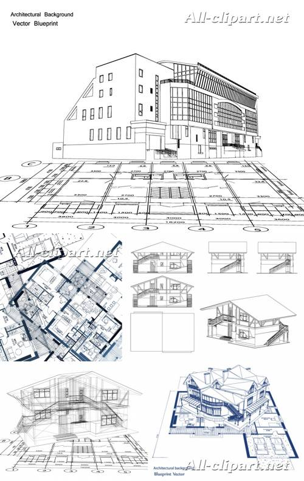

Завод металлических конструкций
изготовление строительных конструкций
из черных и цветных металлов
ОАО "ЗМК" - предприятие, предоставляющее полный комплекс услуг
в отрасли строительства промышленных зданий и сооружений на территории
Украины, Белорусси, Казахстана:

- проектирование
- изготовление
- доставка
- монтаж
Основная специализация предприятия - торговые комплексы, логистические центры,
сельскохозяйственные сооружения, производственные здания и сооружения, магазины, СТО.
Проектирование ведется с использованием современного программного обеспечения,
позволяющего получить объемное изображение любой детали либо сооружения в целом.
Металлоконструкции изготавливаются в соответствии с ISO 9001:2009 на современном
оборудовании квалифицированным персоналом. Сварные балки изготавливаются на линии
автоматической сварки, обеспечивающей высокое качество сварного шва.
|